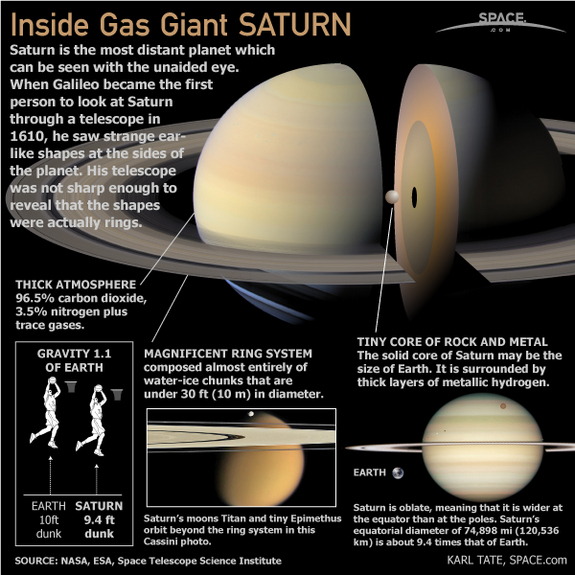

Saturn is the sixth planet from the Sun and the second-largest in the Solar System, after Jupiter. It is a gas giant with an average radius about nine times that of Earth. Although only one-eighth the average density of Earth, with its larger volume Saturn is just over 95 times more massive. Saturn is named after the Roman god of agriculture; its astronomical symbol represents the god's sickle.
Saturn's interior is probably composed of a core of iron nickel and rock (silicon and oxygen compounds). This core is surrounded by a deep layer of metallic hydrogen, an intermediate layer of liquid hydrogen and liquid helium, and finally outside the Frenkel line a gaseous outer layer. Saturn has a pale yellow hue due to ammonia crystals in its upper atmosphere. Electrical current within the metallic hydrogen layer is thought to give rise to Saturn's planetary magnetic field, which is weaker than Earth's, but has a magnetic moment 580 times that of Earth due to Saturn's larger size. Saturn's magnetic field strength is around one-twentieth of Jupiter's.The outer atmosphere is generally bland and lacking in contrast, although long-lived features can appear. Wind speeds on Saturn can reach 1,800 km/h (500 m/s), higher than on Jupiter, but not as high as those on Neptune
Saturn has a prominent ring system that consists of nine continuous main rings and three discontinuous arcs and that is composed mostly of ice particles with a smaller amount of rocky debris and dust. Sixty-two moons are known to orbit Saturn, of which fifty-three are officially named. This does not include the hundreds of moonlets comprising the rings. Titan, Saturn's largest moon, and the second-largest in the Solar System, is larger than the planet Mercury, although less massive, and is the only moon in the Solar System to have a substantial atmosphere.
Physical Characteristics
Saturn is a gas giant because it is predominantly composed of hydrogen and helium ('gas'). It lacks a definite surface, though it may have a solid core. Saturn's rotation causes it to have the shape of an oblate spheroid; that is, it is flattened at the poles and bulges at its equator. Its equatorial and polar radii differ by almost 10%: 60,268 km versus 54,364 km, respectively.[4] Jupiter, Uranus, and Neptune, the other giant planets in the Solar System, are also oblate but to a lesser extent. Saturn is the only planet of the Solar System that is less dense than water—about 30% less. Although Saturn's core is considerably denser than water, the average specific density of the planet is 0.69 g/cm3 due to the atmosphere. Jupiter has 318 times the Earth's mass, while Saturn is 95 times the mass of the Earth, Together, Jupiter and Saturn hold 92% of the total planetary mass in the Solar System
Structure

Despite consisting mostly of hydrogen and helium, most of Saturn's mass is not in the gas phase, because hydrogen becomes a non-ideal liquid when the density is above 0.01 g/cm3, which is reached at a radius containing 99.9% of Saturn's mass. The temperature, pressure, and density inside Saturn all rise steadily toward the core, which causes hydrogen to transition into a metal in the deeper layers.
Standard planetary models suggest that the interior of Saturn is similar to that of Jupiter, having a small rocky core surrounded by hydrogen and helium with trace amounts of various volatiles. This core is similar in composition to the Earth, but more dense. Examination of Saturn's gravitational moment, in combination with physical models of the interior, allowed French astronomers Didier Saumon and Tristan Guillot to place constraints on the mass of Saturn's core. In 2004, they estimated that the core must be 9 to 22 times the mass of the Earth, which corresponds to a diameter of about 25,000 km. This is surrounded by a thicker liquid metallic hydrogen layer, followed by a liquid layer of helium-saturated molecular hydrogen that gradually transitions to a gas with increasing altitude. The outermost layer spans 1,000 km and consists of gas.